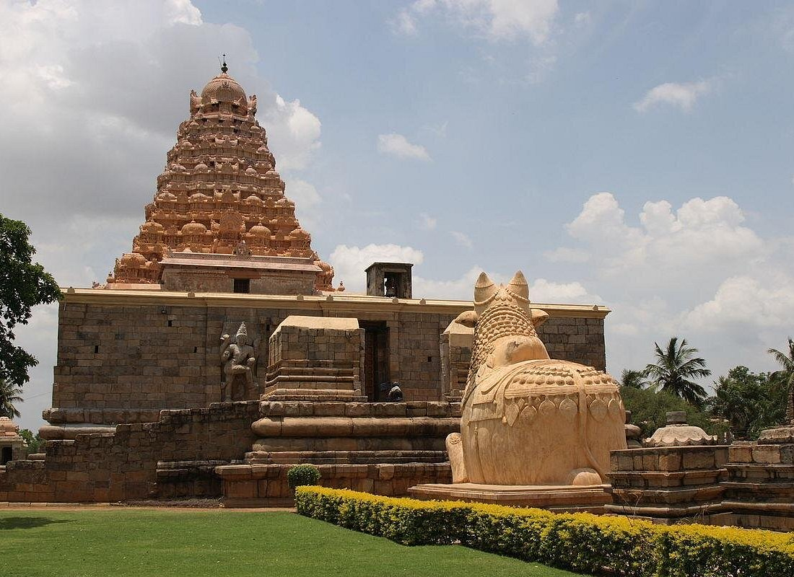
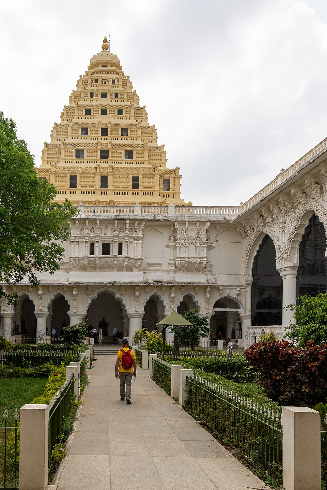

Thanjavur The Granary of South India

History
Thanjavur was the capital of the Great Chola Empire from the 9th to 11th centuries. It flourished under Chola, Nayak, and Maratha rulers, becoming a center of art, architecture, and learning for over 1000 years.
Language
Tamil, English, Marathi
Famous Food
Thanjavur Thalappakatti Biryani, Kumbakonam Degree Coffee, Traditional South Indian Meals
About Thanjavur
Thanjavur is one of the most historically significant cities in South India, renowned for its magnificent temples, exquisite art, and rich cultural heritage. It served as the capital of the mighty Chola Empire and later became a center of Nayak and Maratha culture.
The city is famous for the Brihadeeswarar Temple, a UNESCO World Heritage Site, which stands as a testament to Chola architecture. Thanjavur is also known for its distinctive art forms, including Thanjavur painting, bronze sculptures, and classical music and dance.
Why Visit Thanjavur?
Rich Heritage
Experience millennia of cultural and artistic traditions
Ancient Architecture
Marvel at magnificent Chola temples and palaces
Chola History
Explore the legacy of the powerful Chola dynasty
Traditional Arts
Witness bronze casting and Thanjavur doll making
- Rich cultural heritage spanning over 1000 years
- Ancient Chola architecture at its finest
- Famous Chola history and dynasty legacy
- UNESCO World Heritage temple complex
Must-Visit Places

Brihadeeswarar Temple
UNESCO World Heritage site, 11th-century temple with magnificent vimana

Thanjavur Palace
Nayak and Maratha palace complex with art gallery and museum

Saraswathi Mahal Library
One of Asia's oldest libraries with rare palm leaf manuscripts

Art Gallery
Collection of Chola bronze sculptures and stone carvings

Schwartz Church
18th-century Danish church with historical significance

Thanjavur Doll Factory
Famous for traditional Thanjavur dancing dolls and crafts
Visitor Information
Best Time to Visit
October to March when weather is pleasant for sightseeing
How to Reach
Airport: Tiruchirappalli (60 km)
Railway: Thanjavur Junction
Stay Options
Heritage hotels to modern accommodations
Tourist Helpline
+91 436 123 4567
Current Weather
Explore Thanjavur on Map
📍 Click markers – each place name has a unique bright color. Use the search bar above to find any place.